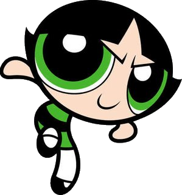

Hello, I am Buttercup!
Buttercup is described as a "tough hotheaded tomboy". Her personality ingredient is "spice", her signature color is green, and she has short black hair in a flip. She loves to get dirty, fights hard and plays rough; she does not plan and is all action. Her unique powers are curling her tongue, spinning into a tornado, and creating fireballs by rubbing her hands together 'till smoke comes out which forms a flaming ball that she throws at an opponent.
See My Resume